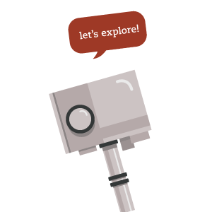
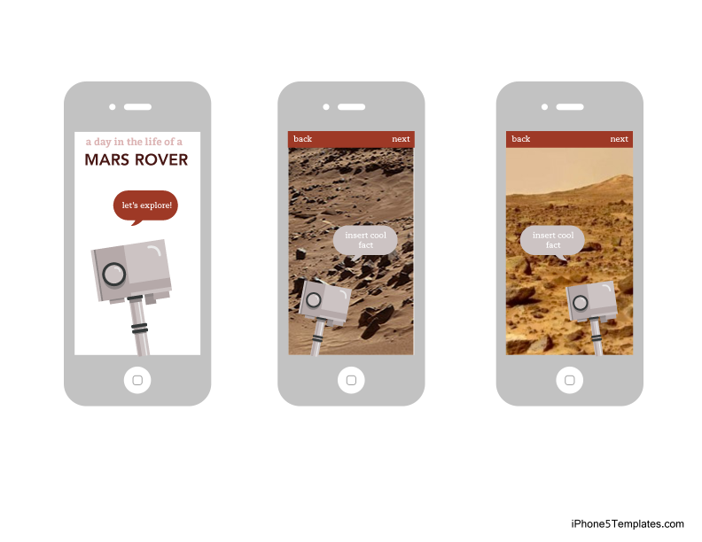

Nunito - Headers
Nunito is a close Google Web Fonts match to Avenir, which I used in the mockup.
A Day in the Life of a Mars Rover
Project Summary
In this interactive website, visitors “explore” the surface of mars accompanied by a personified rover.
Audience Profile
Elementary School students 3rd grade through 5th grade are the primary target audience.
Perception and Tone
The goal is to engage students by personifying the mars rover as an amiable character. The purpose of this is to make the topic of rovers and mars friendlier and more interesting for the younger target audience.
Communication Strategy
The activity is composed of two parts:
All About Rovers - visitors will “meet” the rover character. They will learn what a rover is and why we use them on Mars.
Virtual Tour of Mars - The rover takes the visitor on a “tour” of the landscape of mars through a slideshow with short facts about the surface and composition of the planet.
Target Message
Students will leave knowing more about what a rover is, why we use rovers on mars, and basic understanding about the surface and composition of Mars.
Digital Mock-Up
Color Palette
#DCB4B4 #954040 #662626 #9E3926 #CCC3C3
Typography
Bitter - Body Text
Bitter is a Google Web Font. I chose Bitter, a heavy slab font, to evoke a feeling of playfulness and friendliness to complement the more intimidating subjects of rovers and the surface of Mars.